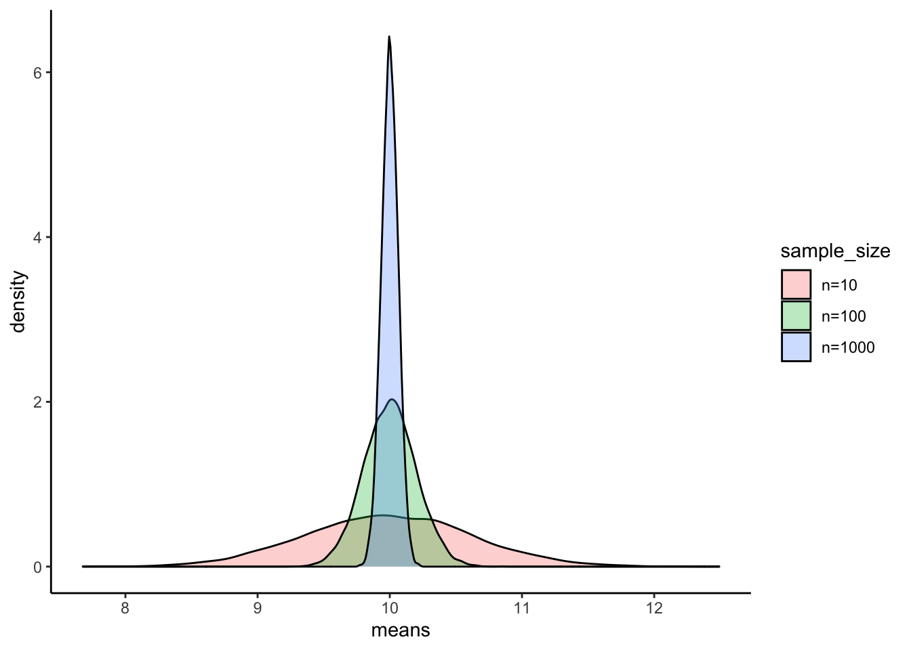
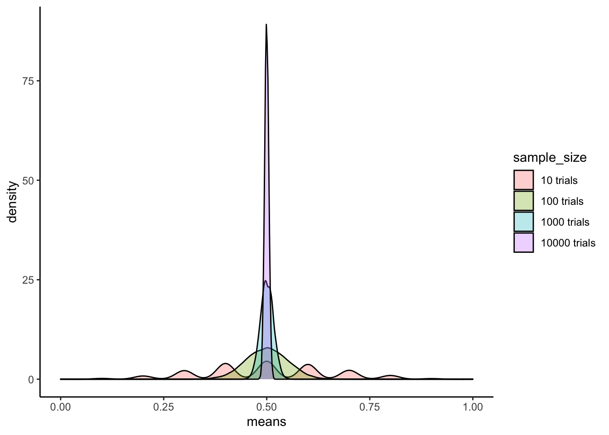
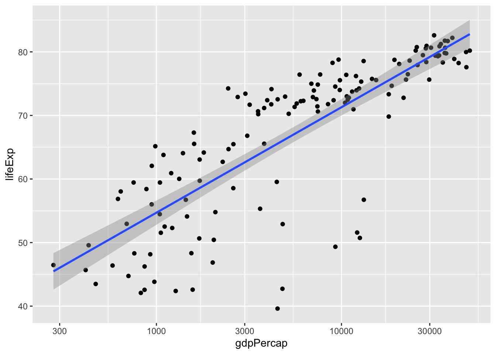
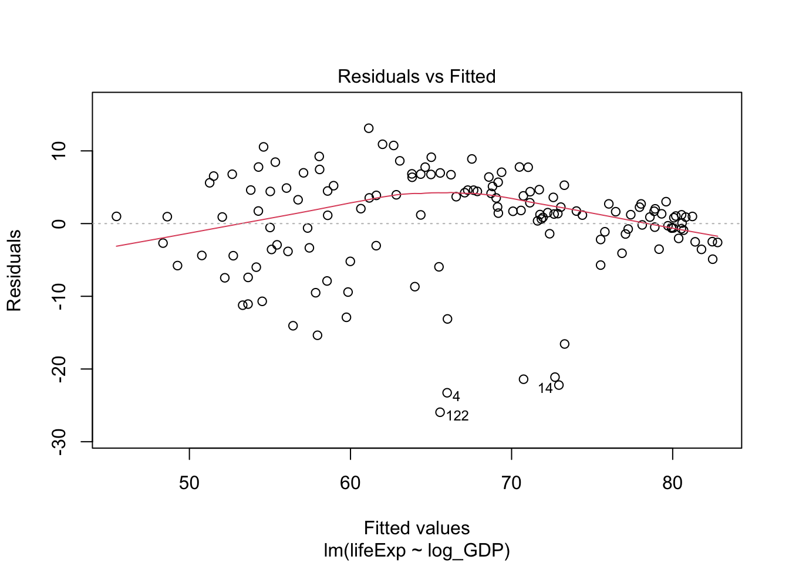
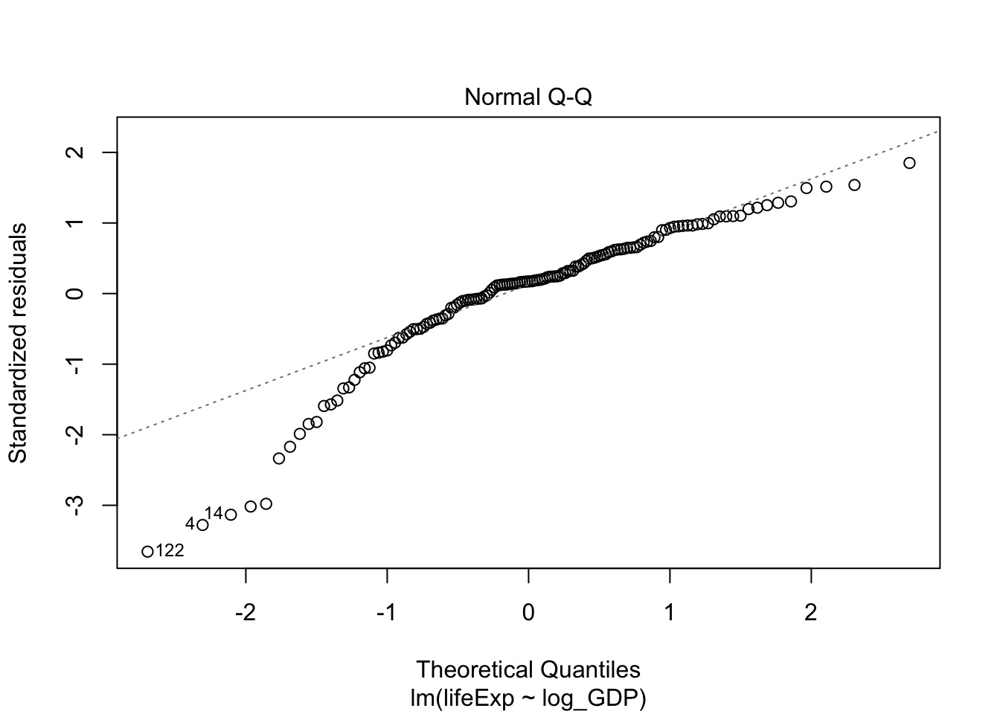
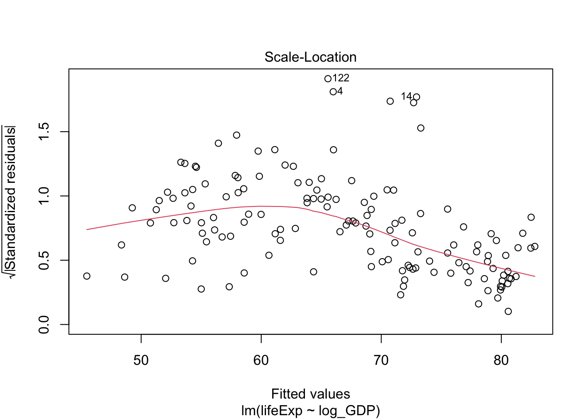
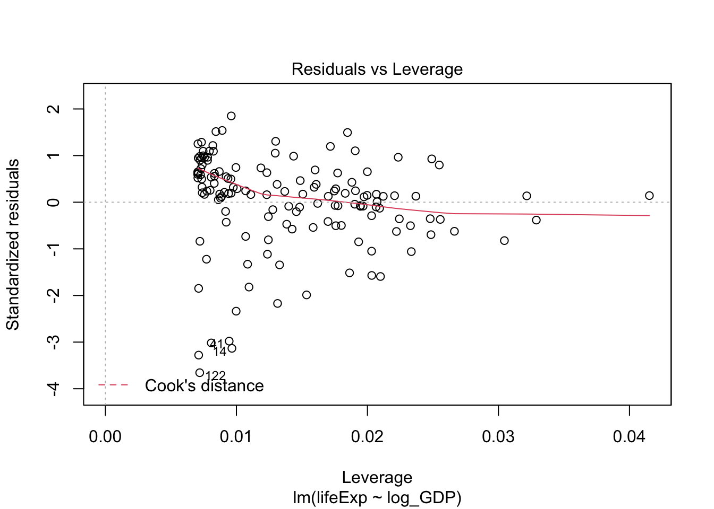

11 Linear regression
Linear regression is a powerful tool that attempts to model the relationship between a dependent and independent variable by fitting a linear equation to observed data. In particular, the model attempts to minimize the distance between actual and predicted y-values, called residuals.
To get an intuition for linear regression, try playing around with the application below.
11.1 Basic concepts
Let’s load the usual packages.
library(gapminder)
library(tidyverse)
library(car) # car stands for Companion to Applied RegressionIn this section, we will test for a relationship between life expectancy and per capita gross domestic product (GDP).
As with all statistical tests, it is a good idea to visualize our data when possible. Let’s create a scatterplot of the two columns of interest, lifeExp and gdpPercap.
dat.2007 <- gapminder %>% filter(year == 2007)
ggplot(dat.2007, aes(x = gdpPercap, y = lifeExp)) +
geom_point()
We can see immediately that this is unlikely a linear relationship. In this case, we will need to log-transform the GDP data to obtain a linear relationship.
ggplot(dat.2007, aes(x = gdpPercap, y = lifeExp)) +
geom_point() +
scale_x_log10()
Now that the data are properly transformed, we can create the linear model for the predictability of life expectancy based on gross domestic product. Before we do that let’s make it clear:
From the scatter plot we can identify a positive relationship – when log(GDP per capita) increases, the life expectancy also tends to be higher. The tendency of one variable going up or down linearly with the increase of another variable is called “correlation.” The more consistent the points are with a LINEAR trend, the higher the closer the correlation is to -1 (for negative relationships) or +1 (for positive relationships).
How fast one variable increases or decreases with the increase of another variable can be described by the slope of the fitting line. To estimate the slope, we need a linear model.
We can only discuss strength of correlation with these linear regression, but NOT the causation. That is, correlation does NOT imply causation.
We can plot the linear model easily:
ggplot(data = dat.2007, aes(x = gdpPercap, y = lifeExp)) +
geom_point() +
scale_x_log10() +
geom_smooth(method = "lm") # lm = linear model## `geom_smooth()` using formula 'y ~ x'
To get rid of the confidence band around the line, pass se = FALSE into geom_smooth().
ggplot(data = dat.2007, aes(x = gdpPercap, y = lifeExp)) +
geom_point() +
scale_x_log10() +
geom_smooth(method = "lm", se = FALSE)You can also customize the colour and thickness of the line. Use the ? operator or read the documentation to see additional options.
Here is another interactive app showing how different data affects the regression model.
11.2 Pearson correlation
Let’s look at the correlation. For normal distributed data, we calculate the Pearson correlation for the log-transformed variable.
dat.2007$log_GDP <- log(dat.2007$gdpPercap) # add a new variable
lifeExp.v.gdp <- lm(formula = lifeExp ~ log_GDP, data = dat.2007)
summary(lifeExp.v.gdp)##
## Call:
## lm(formula = lifeExp ~ log_GDP, data = dat.2007)
##
## Residuals:
## Min 1Q Median 3Q Max
## -25.947 -2.661 1.215 4.469 13.115
##
## Coefficients:
## Estimate Std. Error t value Pr(>|t|)
## (Intercept) 4.9496 3.8577 1.283 0.202
## log_GDP 7.2028 0.4423 16.283 <2e-16 ***
## ---
## Signif. codes: 0 '***' 0.001 '**' 0.01 '*' 0.05 '.' 0.1 ' ' 1
##
## Residual standard error: 7.122 on 140 degrees of freedom
## Multiple R-squared: 0.6544, Adjusted R-squared: 0.652
## F-statistic: 265.2 on 1 and 140 DF, p-value: < 2.2e-16The linear equation is: \(\text{lifeExp} = (7.1909 \pm 0.4602) \times \text{log_GDP} + (4.7951 \pm 4.0045)\). Also notice that the correlation coefficient is \(R^2 = 0.6526 \Rightarrow R = \sqrt{0.6526} = 0.8078\).
The p-value suggests the correlation is significant. The correlation coefficient of 0.8 suggests a positive correation (y increases as x increases). In case you see a negative value, the correlation if negative (one variable going up while the other going down).
For our question, the relationship between life expectancy and GDP, focus on the coefficients section, specifically the line for log_GDP.
First of all, there is a significant relationship between these two variables (p < 2 x 10-16, or, as R reports in the Pr>(|t|) column, p < 2e-16). The Estimate column of the results lists a value of lifeExp.v.gdp$coefficients['log_GDP']. For every 10-fold increase in per capita GDP (remember we log10-transformed GDP), life expectancy increases by almost 7 years.
The linear model assumes that your data is normally distributed for each independent observation. We can generate a diagnostic plot in the same way as one-way ANOVA.
plot(lifeExp.v.gdp)
Q-Q plot suggested this data deviates from normality. Let’s also take a look at the residues of the linear model:
residuals_lm <- residuals(object = lifeExp.v.gdp)
shapiro.test(x = residuals_lm)##
## Shapiro-Wilk normality test
##
## data: residuals_lm
## W = 0.90029, p-value = 2.742e-08Indeed, Shapiro test also suggests the data deviates from normality. In this case, we should use the Spearman (or Kendall) correlation.
11.3 Spearman correlation
If your variables are not normally distributed, you can use the non-parametric Spearman correlation as alternative. Instead of Pearson’s R, the Spearman test outputs rho (\(\rho\)),
cor.test(dat.2007$lifeExp, dat.2007$log_GDP, method = "spearman")##
## Spearman's rank correlation rho
##
## data: dat.2007$lifeExp and dat.2007$log_GDP
## S = 68434, p-value < 2.2e-16
## alternative hypothesis: true rho is not equal to 0
## sample estimates:
## rho
## 0.8565899